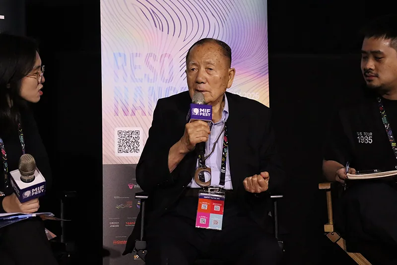
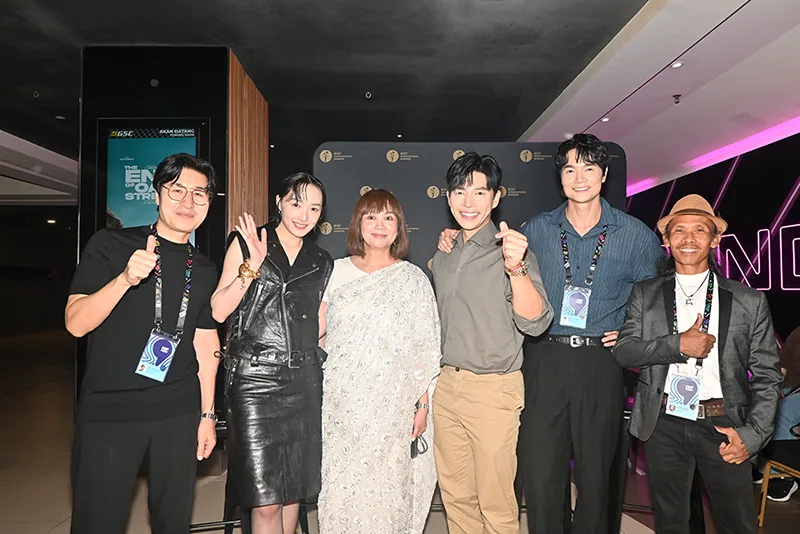

올해로 9회째를 맞는 말레이시아국제영화제(MIFFest, 이하 말레이시아영화제)가 지난 7월 18일부터 25일까지 쿠알라룸푸르 시내 GSC 마이타운 멀티플렉스에서 열렸다. 폐막식을 겸한 말레이시아 골든 글로벌 어워즈 시상식에서는 영화제 경쟁 부문 수상작들이 발표되었다.
말레이시아영화계는 최근 비약적인 성장을 거듭하고 있다. 특히 지난해는 자국의 실사 및 애니메이션 영화가 큰 성공을 거두며 영화산업이 양적으로나 질적으로 큰 도약을 이뤄냈다. 자국 콘텐츠의 잠재력을 확인한 말레이시아 정부는 새로운 인센티브 제도 등을 도입함으로써 영상산업 지원을 확대하는 중이다. 한국영화 또한 말레이시아 영화시장에서 큰 호응을 얻고 있다. 최근 말레이시아에서는 연간 18~19편의 한국영화가 개봉되는데, 지난해 <좀비딸>(2025), <검은 수녀들>(2025) 등 코미디와 오컬트를 비롯한 다양한 장르의 작품들이 관객의 눈길을 끌었고, 올해는 연상호 감독의 <군체>가 단기간에 말레이시아 역대 한국영화 박스오피스 1위에 올랐다. 말레이시아와 한국의 영화 국제공동제작 가능성도 점차 확대되고 있는 중이다. 이런 가운데, 올해 9회째를 맞이한 말레이시아영화제는 이창동 감독에게 평생공로상을 수여하고 마스터클래스에 초청하면서 현지 영화 관계자들과 관객들의 큰 관심을 모았다.

9회 말레이시아국제영화제 개막식 현장
부산국제영화제와의 인연으로 시작되다
말레이시아영화제가 처음 개최된 것은 2017년 2월이다. 이벤트 개최 전문 기업 재지 그룹(Jazzy Group)의 설립자 조앤 고 대표는 국제영화제가 전무한 말레이시아에 새로운 영화제를 만들겠다는 포부를 안고 한국에 왔다. 조앤 고 대표는 당시 부산국제영화제 김지석 수석 프로그래머를 통해 김동호 전 부산국제영화제 이사장을 만나 조언을 구했다. 말레이시아 신인 감독들을 발굴하고 아낌없이 지원했던 김지석 수석 프로그래머는 타계했지만, 김동호 전 이사장은 2017년부터 지금까지 말레이시아영화제 명예집행위원장으로 함께하고 있다. 김동호 전 이사장의 인맥으로 이 영화제는 그간 고레에다 히로카즈, 크리스틴 하킴 등 세계적인 영화인들을 초청할 수 있었다.
경쟁 부문을 도입하고 시상식을 마련하고 아세안 지역 영화 진흥에 초점을 맞추면서, 말레이시아영화제는 보다 오락적이고 대중 친화적인 프로그램과 행사를 통해 차근차근 기반을 다져 왔다. 또한 말레이시아에서 보기 힘든 해외 예술영화와 독립영화를 극장에서 볼 기회를 제공함으로써 자국 영화인들의 지지를 얻고자 했다. <버닝>(2018)을 통해 말레이시아 영화인과 관객들에게 널리 알려졌던 이창동 감독의 영화 세계를 초기작인 <박하사탕>(2000)과 <오아시스>(2002)를 통해 재조명하는 것도, 영화제의 그러한 노력이 반영된 결과다. 영화제 측은 공로상 수상을 발표하면서 “정직함과 연민, 그리고 인간에 대한 깊은 이해를 통해 그의 작품이 문화와 세대를 넘어 계속해서 울림을 주는 영화감독”이라고 의미를 부여했다.
‘공명(Resonance)’을 화두로 내세운 이번 말레이시아영화제는 35개 국가에서 65편의 영화를 초청했다. 개막작은 말레이시아의 대표적인 흥행 제작사 스콥 프로덕션(Skop Productions)의 신작인 <바가: 내일은 누구의 것도 아니다(BAGA: Tomorrow Belongs To No One)>로, 말레이시아 동부의 어촌을 배경으로 한 젊은 연인이 예상치 못한 비밀 거래에 휘말리면서 겪는 일을 다룬 범죄 로맨스 드라마다.
말레이시아영화제는 다른 국제영화제들에 비해 초청작 편수가 많지는 않지만, 프로그램 섹션을 여러 개로 나누어 과거와 현재의 다양한 작품들을 말레이시아 젊은 관객들에게 소개했다. 그중 가장 메인 프로그램은 경쟁 부문 섹션으로, 3편 미만의 장편영화를 연출한 전 세계 감독들의 신작을 대상으로 아시아 각국의 예심 위원들이 선정한 총 10편의 작품을 상영했다. 사전 심사에서는 예심 위원들이 투표를 통해 최우수 작품상, 감독상, 각본상, 촬영상, 남녀 조연 배우상, 남녀 주연 배우상, 그리고 신인상 등의 후보작을 선정했다.

말레이시아 골든 글로벌 어워즈 시상식에서 단상에 올라
기념사진을 찍고 있는 수상자들
다민족·다문화를 반영한 프로그램
말레이시아는 주요 인구가 말레이계, 중국계, 그리고 타밀계 등 다민족으로 나뉘는 만큼, 동남아시아 국가들 가운데서도 가장 다문화적인 성격이 강한 나라다. 그만큼 영화·영상산업에서도 말레이영화와 중국영화, 그리고 타밀 인도영화가 동시에 제작되고 상영된다. 영화제의 프로그램은 이러한 자국 영화 소비자 및 문화의 다양성을 반영하고자 고심한 것으로 보인다. ‘에이 리스터(A-Lister)’에는 <샴(SHAM)>(2025, 미이케 다카시), <시라트>(2025, 올리베르 라셰), <여행과 나날>(2025, 미야케 쇼) 등 세계 영화계 화제작을 초청하고, 과감한 아시아 독립영화의 비전을 보여 주는 ‘네온(Neon)’, 다큐멘터리 영화를 초청하는 ‘매니페스토(Manifesto)’, 그리고 홍콩, 인도, 한국, 러시아의 신작 영화들로 구성된 다채로운 국가별 특별 프로그램을 마련했다. 특히 한국영화의 경우 말레이시아와 한국의 공동제작으로, 조앤 고 집행위원장이 직접 제작한 <청어>(감독 이상훈)와 명예집행위원장인 김동호 감독의 다큐멘터리 <미스터김, 영화관에 가다>가 상영되었다. 또한 <스페셜 포스: 특수부대 전랑>(2015)의 감독이자 <유랑지구>(2019)의 주연 배우인 중국의 대표적인 액션 스타 우징(오경)을 초청해 영화 부문 특별 공헌상(Excellent Achievement in Film Award)을 수여하고, 그가 주연을 맡은 원화평 감독의 신작 <표인: 풍기대막>을 상영해 중국계 말레이시아 관객들의 이목을 집중시켰다. 중국 본토에도 우징의 말레이시아 방문에 대한 소식이 전해졌다.
말레이시아 국영 방송에 생중계된 폐막식에서는 경쟁 부문 초청작을 대상으로 한 말레이시아 골든 글로벌 어워즈 시상식이 개최되었다. 영화제 기간에 인도의 아누락 카쉬압 감독(<와시푸르의 갱들>(2012))을 필두로 한 심사위원단의 심사를 통해 주요 본상 외에도 관객상, 영화 부문 공헌상, 그리고 평생공로상 등이 수여되었다. 올해 작품상은 한국계 캐나다 감독 로이드 리 최의 장편 데뷔작 <루의 운수 좋은 날(Lucky Lu)>(2025)이 수상했으며, 싱가포르영화 <풍선껌 소녀(Ah Girl)>의 ANG Geck Geck Priscilla 감독이 신인상을, 그리고 이 영화의 놀라운 아역 배우 옹 슈안 징이 여우주연상을 받았다. 그리고 칠레영화 <더 레드 행어(The Red Hangar)>가 각본상과 촬영상을, 이집트영화 <아이샤는 날 수 없어(Aisha Can’t Fly Away)>(2025)의 모라드 모스타파 감독이 감독상을, 그리고 스리랑카영화 <리버스톤(Riverstone)>(2025)에 출연한 두 배우 마헨드라 페레라와 프리얀타 시리쿠마라가 각각 남우주연상과 남우조연상을 수상했다.

<미스터김, 영화관에 가다> 상영 후 관객들과 대화를 나누는 김동호 말레이시아국제영화제 명예집행위원장
<미스터김, 영화관에 가다> 상영 후 관객들과 대화를 나누는
김동호 말레이시아국제영화제 명예집행위원장

<청어>의 이상훈 감독(맨 왼쪽), 주연 배우인 홍콩 출신 세실리아 초이(왼쪽 두 번째)와
지승현(왼쪽 네 번째) 등 <청어>의 출연 및 제작진
<청어>의 이상훈 감독(맨 왼쪽), 주연 배우인 홍콩 출신 세실리아 초이(왼쪽 두 번째)와 지승현(왼쪽 네 번째) 등 <청어>의 출연 및 제작진
한국과 협업하는 아세안영화의 허브
말레이시아영화제의 재원은 정부 공공 기금보다 다양한 기업 후원으로 마련된다. 콘서트와 이벤트를 제작하면서 엔터테인먼트 사업가로서 수완을 발휘해 온 조앤 고 집행위원장의 뚝심이 지금까지 영화제를 이끌어 온 것이다. 조앤 고 위원장은 내년 영화제 10주년을 기념하기 위한 다양한 아이디어를 벌써부터 구상하고 있다. 그의 궁극적인 목표는 말레이시아영화제를 아세안의 허브로 만드는 것. 그래서 동남아시아국가연합(ASEAN)의 영화·영상산업을 중심에 두고 다양한 하위 프로그램을 진행한다. ‘기네스 세계 기록’의 동남아시아 버전이라고 할 수 있는 ‘아세안 레코즈(ASEAN Records)’를 통해 “아세안사무국이 인정하는 연례 영화 시상식과 상설 영화 큐레이션 프로그램을 동시에 운영하는 최초의 독립적으로 조직된 국제영화제”라는 공식 인증도 받았다. 동남아시아영화계의 다채로운 문화와 정체성을 담은 이야기를 발굴하고, 지역 영화인들이 협업할 수 있는 지속 가능한 허브 역할을 구축했다는 평가를 받은 것이다.
영화제의 ‘아세안 온 스크린(ASEAN On Screen)’ 섹션은 이러한 비전을 반영한 프로그램으로, <외로운 사막에 우리를 묻어줘(Bury Us in a Lone Desert)>(베트남, 2025), <도파민 (Dopamin)>(인도네시아, 2025), <피폴리피나스 공화국(Republic of Pipolipinas)>(필리핀, 2025) 등 아세안 지역에서 주목받은 6편의 영화를 초청했다. 아세안에 특화된 산업 프로그램으로 필리핀의 거장 브리얀테 멘도자 감독, 그리고 인도네시아 히트 애니메이션 <점보>의 제작자인 앙가 드위마스 사송코 등을 패널로 초청해 ‘파이낸싱 필름 투데이’라는 제목의 패널 토론을 열기도 했다. 또한 영화제는 말레이시아의 독립영화 및 상업영화들을 다양한 섹션에 배치함으로써, 해외 게스트 및 영화제 관객들이 말레이시아영화의 현재를 들여다볼 수 있는 기회를 마련했다. 개막작 <바가>, 경쟁 부문에 초청된 <인생해해(The Waves Will Carry Us)>(2025), 아세안 온 스크린 부문의 <쿠알라룸푸르의 눈물(Tears in Kuala Lumpur)> 외에도, ‘말레이시안 디스패치’ 부문의 <램리를 찾아서(Finding Ramlee)> <허 세컨드 액트(Her Second Act)> <폴롱(Polong)> 등 세 편의 말레이시아 신작 영화는 코미디, 드라마, 호러 등 관객 친화적인 말레이시아영화 스토리텔링의 단면을 엿보게 했다. 특히 <허 세컨드 액트>는 부산아시아영화학교 2022년 졸업생인 조이 리 초이 킨 감독이 쓰고 연출한 데뷔 작품으로, 한국영화계가 육성한 아시아 신진 인재가 이루어 낸 값진 성과라고 할 수 있다.
‘이창동의 세계’를 향한 뜨거운 열기
올해 말레이시아영화제가 특별히 주목한 한국 감독은 이창동이다. <박하사탕> <오아시스>의 관객과의 대화 외에도 마스터클래스와 시상식, 그리고 현지 언론 인터뷰 등 다양한 일정을 소화했다. 행사장을 가득 메운 관객들로부터 이창동의 영화 세계에 대한 관심과 열정을 실감할 수 있었다. 이창동 감독이 연출한 여섯 편의 작품을 모두 본 말레이시아의 젊은 영화인들, 영어와 중국어로 출간된 이창동 감독의 소설집을 들고 와 사인 요청을 하는 팬들도 많았다. 마침 이창동 감독의 신작 <가능한 사랑>이 베니스국제영화제 경쟁 부문 및 토론토국제영화제 스페셜 프레젠테이션 부문에 선정되었다는 소식이 알려진 직후였기에, 현지 언론과 영화제 참가자들은 이에 더욱 깊은 관심을 보였다. 현지 언론들은 이창동 감독이 <버닝> 이후 8년 만에 신작을 발표하게 된 경과와 소회, 넷플릭스와 작업하게 된 계기, 변화하는 영화 관람 환경 및 한국 영화산업에 대한 견해 등을 공통적으로 질문했다.
이창동 감독은 언론 매체들과의 인터뷰에서 “촬영을 하지 않는 동안에도 끊임없이 영화에 대해 고민하고 시나리오를 썼다”면서, “내가 지금 하려고 하는 영화가 나에게 의미가 있는지, 관객에게도 의미가 있는지, 또 영화 그 자체로 의미가 있는지 그런 질문을 스스로에게 한다. 이는 어떤 작품을 해야 하는 이유를 내 안에서 찾는 방식이고, 이 세 가지 질문에 대한 확신이 있어야 영화 제작에 들어갈 수 있다”고 말했다. 또한 넷플릭스 공개에 앞서 <가능한 사랑>의 극장 개봉에 대해 언급하면서, “나는 한국 영화산업이 좋아질 거라고 믿고 싶고 그러기를 바란다. 지금도 상황이 그렇게 좋지는 않지만 많은 사람들이 그러길 바라며 노력하고 있고, 올해 상반기에는 꽤 많은 관객이 극장을 찾아왔으니 하반기에도 그런 흐름을 이어 가길 기대한다”고 말했다.
한편, 아세안 레코즈 상위 단계인 ‘아시아 레코즈(ASIA Records)’는 이창동 감독에게 공식 기록 인증상을 수여했다. 2018년 칸국제영화제 경쟁 부문 초청 당시 <버닝>이 스크린 인터내셔널이 공식 집계한 비평가들의 평점 기록에서 4점 만점에 3.8점을 달성하는 최초이자 최고의 기록을 세운 것에 대한 인증이었다. 아시아 레코즈는 공식 웹사이트의 보도자료를 통해 <버닝>의 기록이 “2026년 현재까지도 깨지지 않은 전례 없는 평론가들의 평가 결과”이며, “아시아영화가 특정한 사회적 현실에 뿌리를 둔 스토리텔링을 통해 보편적인 감정적, 도덕적 질문을 다루면서도 국제적인 비평가들과 소통할 수 있는 능력을 보여 준다”면서 이번 인증의 의의를 발표했다. 또한 “이창동 감독의 말레이시아 방문은 스트리밍 플랫폼과 변화하는 관객 습관이 영화 관람 방식에 지속적으로 영향을 미치는 상황에서 영화의 미래에 대해 생각해 볼 기회를 제공했다”면서 마스터클래스 내용을 자세히 전달했다. 이창동의 세계를 향한 다양하고 뜨거운 열기를 보여 준 말레이시아영화제의 현장은 한국영화가 이루어 낸 성취의 한 면을 비추는 흥미로운 풍경이었다.
“내 영화의 질문이 관객의 현실과 연결되길”
이창동 감독 마스터클래스 지상 중계
말레이시아 영화 제작사 쿠만 픽처스(Kuman Pictures)의 대표 아미르 무하마드(Amir Muhammad)의 사회로 진행된 마스터클래스는 시종일관 유쾌한 분위기 속에서 다채롭고 깊이 있는 대화로 이루어졌다. 이창동 감독의 사적인 취향에 대한 가벼운 질문으로 시작되었는데, 특히 월드컵 출전 팀 가운데 아프리카 국가 카보베르데 팀을 응원하고, 케이팝 가수 중 지드래곤을 좋아한다는 이창동 감독의 답변은 객석의 긴장감을 해제시키고, 말레이시아 관객들과의 거리를 좁히며 친근감을 더했다.

이창동 감독의 신작 <가능한 사랑>에 대한 많은 관심이 집중되었던 마스터클래스
Q <가능한 사랑>은 키에슬로프스키 감독의 <십계>(1989) 가운데 한 편에서 시작된 것으로 알려져 있다. 어떻게 작업하게 됐나?
<가능한 사랑>이 영화화되기 이전에 <십계> 시리즈를 세계 여러 감독들이 한 에피소드씩 맡아 극장용 장편영화를 만드는 프로젝트가 있었다. 나 역시 그 프로젝트 중의 하나로 이 영화를 시작했다. 그런데 <가능한 사랑>이 넷플릭스와 작업하게 되면서 그 프로젝트는 애매한 상태에 놓이게 되었다. 거기서부터 출발한 영화이기는 하나, <십계>의 에피소드를 각색하지는 않았고, 완전히 다른 이야기이다. 다만 <십계> 중 하나의 계명과 관련이 있기는 하다.
Q 지난해 영문으로 번역 출간된 소설집 <눈 오는 날과 다른 이야기들(Snowy Day and Other Stories)>을 읽었다. 이 책의 서문에 “소설을 쓰는 것이 현실을 회피하지 않기 위한 방법”이라고 말했다. 보통 사람들은 소설을 현실의 도피 수단이라고 생각을 하는데 흔치 않은 관점이라고 생각한다.
나는 영화란 모름지기 현실에 대해서 이야기해야 하고, 현실을 외면하지 말아야 한다고 생각한다. <버닝>에 나오는 작가 윌리엄 포크너도 “문학이란 고통받는 사람들의 영혼을 구원하는 것”이라고 말했다. 나도 그런 생각을 따르면서 글을 썼고, 그 생각은 영화를 만드는 지금도 변함이 없다. 관객들이 내 영화를 보고 난 뒤 영화가 그들의 현실 속에 연결되기를 바란다. 영화에서 내가 던진 질문의 답을 관객들이 현실 속에서 찾아가기를 바란다. 물론 이런 영화들은 관객을 불편하게 만들 수 있다. 그래도 나 같은 영화를 만드는 사람이 필요할 거라고 믿고 있다.
Q 배우들과의 작업 과정이 어떤지 궁금하다. 현장에서 배우들과 리허설을 많이 하는 편인가?
배우들과 리허설을 그렇게 많이 하는 편이 아니다. 배우들이 연극 연습하듯이 리허설을 많이 하게 되면 연기가 굳어진다고 생각하기 때문에, 배우들에게 집에서 대사 연습도 하지 말아 달라고 얘기한다. 시나리오를 만드는 과정에서 배우들 이야기를 듣고 같이 만들어 가는 경우는 있지만, 대부분의 경우 시나리오가 완성된 뒤에는 대사를 거의 고치지 않는다. 다만 내 영화는 카메라 움직임이 꽤 복잡한 편이다. 그래서 카메라 리허설은 많이 한다. 그런데 그때도 배우를 직접 데리고 하지 않고 대역과 함께한다.
Q <가능한 사랑>에서 설경구, 전도연 배우와 다시 작업했다. 두 배우를 미리 염두에 두고 시나리오를 썼는지?
<가능한 사랑>은 해고 노동자와 그의 아내, 그리고 다큐멘터리 감독과 그의 남편, 이렇게 두 부부의 이야기를 다룬다. 그중 해고 노동자와 아내의 이야기는 몇 년 전에 다른 영화로 준비하고 시나리오도 거의 쓰다가 중단했었다. 그때 이미 설경구와 전도연 두 사람으로 결정되어 있었기 때문에 준비를 같이 했다. 그리고 2022년에 내가 <심장소리>라는 단편영화를 만들었는데, 그때도 두 배우가 출연했다. 당시 프로젝트가 중단되었다가 다큐멘터리 감독 부부의 이야기가 들어오면서 <가능한 사랑>으로 되살아났고, 그래서 두 배우가 해고 노동자와 아내 역할을 맡게 되었다.
Q 작가로서나 감독으로서 작업할 때 롤 모델이 있는지? 그리고 한국 시인의 시 가운데 한 편을 추천한다면 어떤 시를 좋아하는지?
롤 모델이라고 부를 수 있는 사람은 없긴 하지만 그래도 많은 작가, 감독들에게 영향을 받았다고 말할 수 있다. 한국 작가 가운데 한 명을 꼽자면 황석영이라는 작가를 말할 수 있다. 또한 영화감독으로 내가 좋아하고 영향을 받은 감독은 대만의 허우샤오셴 감독이다. 그의 작품 중에서 <펑꾸이에서 온 소년>(1983)을 가장 좋아하는데, 그 영화를 처음 봤을 때 마치 내가 만든 영화를 본 것 같은 기분이 들었다. 한국의 시 가운데서는 김수영 시인의 ‘풀’을 추천하고 싶다.
Q 말레이시아영화계는 검열이 심하고, 이번에 상영된 <박하사탕>과 <오아시스>도 일부 장면이 검열되었다. 이에 대해 직접 말하기 어려울 수도 있지만, 검열과 관련된 생각을 들려준다면 큰 힘이 될 것 같다.
<박하사탕>과 <오아시스>가 검열된 채로 상영된다는 점, 그리고 어떤 장면이 문제가 되는지는 미리 들어서 알고 있었다. 한국에서도 검열이 있었다. 특히 내가 작가로서 소설을 썼던 1980년대는 굉장히 강한 군사 정권이 억압 통치를 할 때였는데, 그때는 강력한 검열이 있었다. 특히 광주에서 있었던 군사 정권에 의한 학살에 대해 이야기하는 것은 금기시되고 있었다. 그때도 검열을 피하기 위한 창의적인 방식을 찾아야만 했다. 검열이 있더라도 창작자들은 그 검열을 피하기 위한 방법을 찾으면서 좀 더 창조적이 되기도 한다고 생각한다.